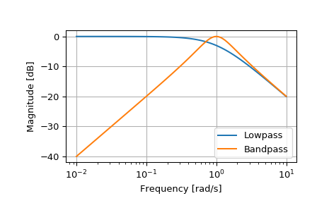

scipy.signal.lp2bp¶
-
scipy.signal.lp2bp(b, a, wo=1.0, bw=1.0)[source]¶ Transform a lowpass filter prototype to a bandpass filter.
Return an analog band-pass filter with center frequency wo and bandwidth bw from an analog low-pass filter prototype with unity cutoff frequency, in transfer function (‘ba’) representation.
- Parameters
- barray_like
Numerator polynomial coefficients.
- aarray_like
Denominator polynomial coefficients.
- wofloat
Desired passband center, as angular frequency (e.g., rad/s). Defaults to no change.
- bwfloat
Desired passband width, as angular frequency (e.g., rad/s). Defaults to 1.
- Returns
- barray_like
Numerator polynomial coefficients of the transformed band-pass filter.
- aarray_like
Denominator polynomial coefficients of the transformed band-pass filter.
Notes
This is derived from the s-plane substitution
\[s \rightarrow \frac{s^2 + {\omega_0}^2}{s \cdot \mathrm{BW}}\]This is the “wideband” transformation, producing a passband with geometric (log frequency) symmetry about wo.
Examples
>>> from scipy import signal >>> import matplotlib.pyplot as plt
>>> lp = signal.lti([1.0], [1.0, 1.0]) >>> bp = signal.lti(*signal.lp2bp(lp.num, lp.den)) >>> w, mag_lp, p_lp = lp.bode() >>> w, mag_bp, p_bp = bp.bode(w)
>>> plt.plot(w, mag_lp, label='Lowpass') >>> plt.plot(w, mag_bp, label='Bandpass') >>> plt.semilogx() >>> plt.grid() >>> plt.xlabel('Frequency [rad/s]') >>> plt.ylabel('Magnitude [dB]') >>> plt.legend()
